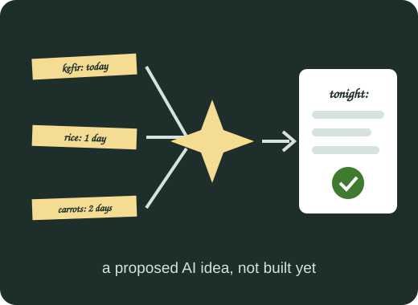

AI Rescue Recipes

The idea
We propose an AI feature that looks at the food closest to its date on one floor and suggests a simple meal that uses it first. In Lab 1 this is only a description: nothing is implemented yet.
How AI would help
A person has to think about many items, dates and diets at once. An AI model could do that quickly and explain its choice. It would not decide if food is safe. Students still check the smell, the look and the label.
What the AI would do
- Read the items that expire within two days
- Suggest a cheap recipe with a dorm kitchen in mind
- Say which ingredients are still missing
Contribution
File: ai-rescue.html. Completed work: Description of the proposed AI feature. Image source: images/ai-rescue.svg, original illustration made for this project.